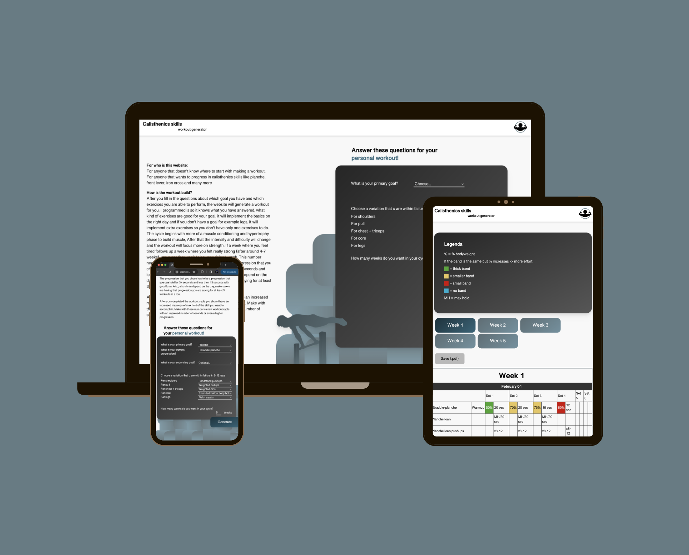

Portfolio van Jop Molenaar

Who am I?
Hello I am Jop Molenaar, 21 years old and studying Communication and Multi-Media Design on the HvA. I am interested in full stack development, IoT and optimizing the UX of the product. I also love to write a lot of logic with Javascript and to learn new things. I can work individually but I also worked many times in a team before and I like the team aspect of helping each other out and making something together. Besides that, I am a very disciplined, calm and nice guy that has a great passion for calisthenics.
Experience
Little text about my experience and projects I worked on.
Skills
Hard skills
Hard skills
- HTML
- CSS/SASS
- JS
- PHP & SQL
- C++
- nodeJs
- UI/UX
- service workers
Soft skills
- Discipline
- Stress-resistant
- Driven
- Trustworthy
- Positive
- Self-reliant
- Discipline
- Stress-resistant
- Driven
- Trustworthy
- Positive
- Self-reliant
Projects
Contact me:
LinkedIn down below ⬇️